pacman::p_load(sf, tmap, tidyverse, httr, ggplot2, dplyr, spatstat, stars)Take-home Exercise 1
1. Overview
1.1 Background
Business formation is a key indicator of urban economic vitality. In Singapore, newly registered businesses across different industries reflect spatial and temporal patterns of economic activities. By leveraging ACRA’s corporate entities dataset, this study explores where and when businesses in F&B, ICT, and Education sectors are established, and whether their spatial distribution shows clustering tendencies
1.2 Objectives
To map the spatial distribution of newly registered businesses in selected industries (F&B, ICT, Education).
To conduct second-order spatial point pattern analysis (e.g., G, F, K, L functions) to assess clustering or randomness.
To compare patterns across industries and discuss potential urban and policy implications.
2. Data Wrangling
2.1 Loading Packages
| Package | Function |
|---|---|
| sf | Standard framework for handling spatial vector data |
| tmap | Package for creating thematic maps and spatial data visualization |
| tidyverse | Core collection of packages for data science (includes ggplot2, dplyr, etc.) |
| httr | For making HTTP requests and interacting with web APIs |
| spatstat | Specialized for spatial point pattern analysis and spatial statistics |
| stars | Handles raster data and multi-dimensional spatiotemporal arrays |
2.2 The Data
The datasets are Information on Corporate Entities datasets of ACRA. There are a total of 27 csv files organised alphabetically.
To facilitate data extraction, the original datasets have been merged to generate a new dataset using the following code.
folder_path <- "data/aspatial/acra"
file_list <- list.files(path = folder_path,
pattern = "^ACRA*.*\\.csv$",
full.names = TRUE)
acra_data <- file_list %>%
map_dfr(read.csv)
write_rds(acra_data,
"data/rds/acra_data.rds")acra_data <- read_rds("D:/XieHaoyang3537/ISSS626-GAA-XieHaoyang/In-class_Ex/In-class_ex2/data/rds/acra_data.rds")2.3 Geocoding
Time Range
start_date <- as.Date("2024-01-01")
end_date <- as.Date("2025-06-30")Define functions: filtering + cleaning + geocoding
prep_biz_data <- function(df, ssic_codes) {
biz <- df %>%
select(1:24) %>%
filter(primary_ssic_code %in% ssic_codes) %>%
rename(date = registration_incorporation_date) %>%
mutate(date = as.Date(date)) %>%
filter(date >= start_date & date <= end_date) %>%
mutate(
YEAR = year(date),
MONTH_NUM = month(date),
MONTH_ABBR = month(date, label = TRUE, abbr = TRUE),
postal_code = str_pad(postal_code, width = 6, side = "left", pad = "0")
)
postcodes <- unique(biz$postal_code)
url <- "https://onemap.gov.sg/api/common/elastic/search"
found <- data.frame()
not_found <- data.frame(postcode = character())
for (pc in postcodes) {
query <- list(
searchVal = pc,
returnGeom = "Y",
getAddrDetails = "Y",
pageNum = "1"
)
res <- GET(url, query = query)
json <- content(res)
if (json$found != 0) {
df_res <- as.data.frame(json$results, stringsAsFactors = FALSE)
df_res$input_postcode <- pc
found <- bind_rows(found, df_res)
} else {
not_found <- bind_rows(not_found, data.frame(postcode = pc))
}
}
biz <- biz %>%
left_join(found, by = c("postal_code" = "POSTAL"))
biz_sf <- st_as_sf(biz, coords = c("X", "Y"), crs = 3414)
return(biz_sf)
}Select the industry and save the file
ssic_fnb <- c(56111, 56112, 56113) # Cafes, Food courts, Restaurants
ssic_ict <- c(62021, 63120, 58201) # IT consultancy, web portals, software publishing
ssic_edu <- c(85410, 85509) # Tuition, other education
biz_fnb <- prep_biz_data(acra_data, ssic_fnb)
biz_ict <- prep_biz_data(acra_data, ssic_ict)
biz_edu <- prep_biz_data(acra_data, ssic_edu)
write_rds(biz_fnb, "data/rds/biz_fnb.rds")
write_rds(biz_ict, "data/rds/biz_ict.rds")
write_rds(biz_edu, "data/rds/biz_edu.rds")3. Mapping the geospatial data sets
Importing data
biz_fnb <- read_rds("data/rds/biz_fnb.rds")
biz_ict <- read_rds("data/rds/biz_ict.rds")
biz_edu <- read_rds("data/rds/biz_edu.rds")
sg_boundary <- st_read("data/MasterPlan2019SubzoneBoundaryNoSeaKML.kml") %>%
st_zm(drop = TRUE, what = "ZM") %>% st_transform(crs = 3414)Reading layer `URA_MP19_SUBZONE_NO_SEA_PL' from data source
`D:\XieHaoyang3537\ISSS626-GAA-XieHaoyang\Take-home_Ex\Take-home_ex1\data\MasterPlan2019SubzoneBoundaryNoSeaKML.kml'
using driver `KML'
Simple feature collection with 332 features and 2 fields
Geometry type: MULTIPOLYGON
Dimension: XY
Bounding box: xmin: 103.6057 ymin: 1.158699 xmax: 104.0885 ymax: 1.470775
Geodetic CRS: WGS 843.1 F&B Businesses
tmap_mode("plot")
tm_shape(sg_boundary) +
tm_polygons(col = "lightgrey", border.col = "white") +
tm_shape(biz_fnb) +
tm_dots(col = "blue", size = 0.2, alpha = 0.6) +
tm_layout(title = "F&B Businesses (2024-2025)")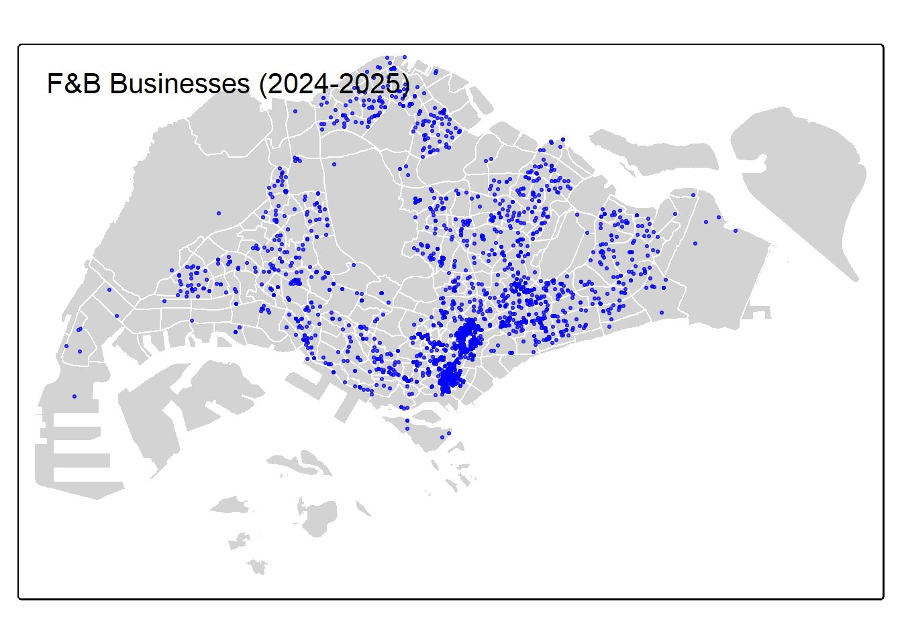
3.2 Information and Communications Industry
tmap_mode("plot")
tm_shape(sg_boundary) +
tm_polygons(col = "lightgrey", border.col = "white") +
tm_shape(biz_ict) +
tm_dots(col = "red", size = 0.2, alpha = 0.6) +
tm_layout(title = "Information and Communications Industry (2024-2025)")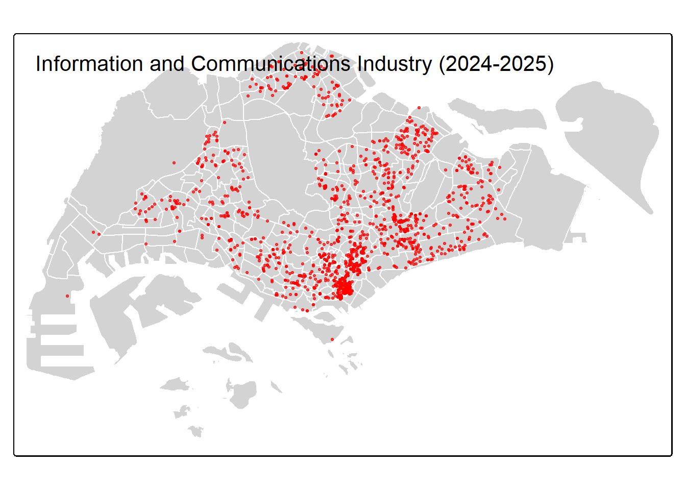
3.3 Education
tmap_mode("plot")
tm_shape(sg_boundary) +
tm_polygons(col = "lightgrey", border.col = "white") +
tm_shape(biz_edu) +
tm_dots(col = "green", size = 0.2, alpha = 0.6) +
tm_layout(title = "Education (2024-2025)")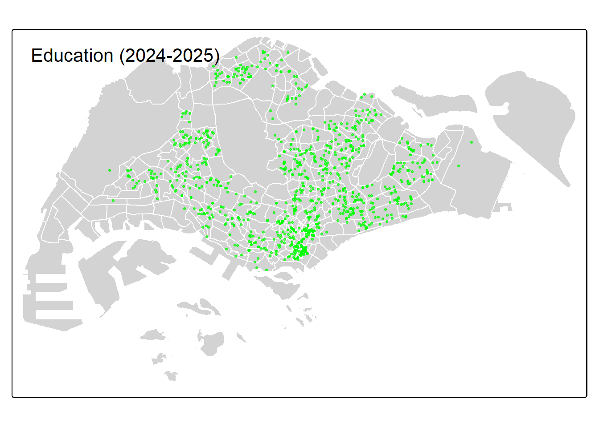
| Insight |
|---|
From the above geospatial map, it can be roughly observed that these three industries are distributed fairly evenly across residential areas in Singapore. They exhibit higher density in the central business district. Additionally, F&B businesses and the Information and Communications Industry show scattered distribution in the industrial zones on the western part of the island. |
4. Kernel Density Estimation
Using KDE to visualize distribution hotspots and concentration trends across various industries.
4.1 F&B Businesses
biz_fnb_ppp <- as.ppp(st_coordinates(biz_fnb),
W = as.owin(st_union(sg_boundary)))
kde_fnb <- density(biz_fnb_ppp, sigma = 1000)
kde_fnb_stars <- st_as_stars(kde_fnb) * 1e6
st_crs(kde_fnb_stars) <- 3414
tm_shape(kde_fnb_stars) +
tm_raster(
alpha = 0.7,
palette = "Blues",
title = "Density (per km²)"
) +
tm_shape(sg_boundary) + tm_borders(lwd = 0.5) +
tm_layout(title = "KDE Hotspots - F&B Businesses (2024-2025)")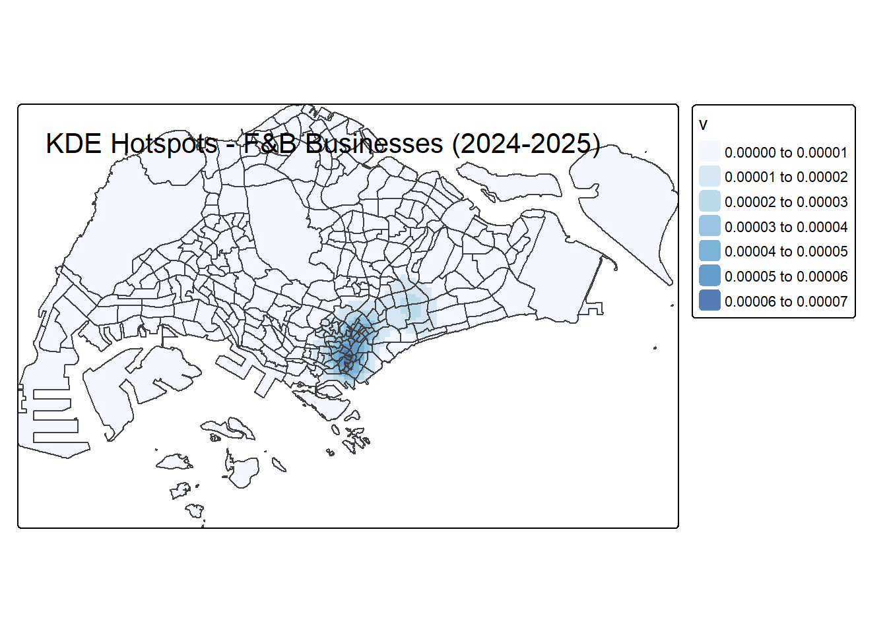
4.2 Information and Communications Industry
biz_ict_ppp <- as.ppp(st_coordinates(biz_ict),
W = as.owin(st_union(sg_boundary)))
kde_ict <- density(biz_ict_ppp, sigma = 1000)
kde_ict_stars <- st_as_stars(kde_ict) * 1e6
st_crs(kde_ict_stars) <- 3414
tm_shape(kde_ict_stars) +
tm_raster(
alpha = 0.7,
palette = "Reds",
title = "Density (per km²)"
) +
tm_shape(sg_boundary) + tm_borders(lwd = 0.5) +
tm_layout(title = "KDE Hotspots - Information and Communications Industry (2024-2025)")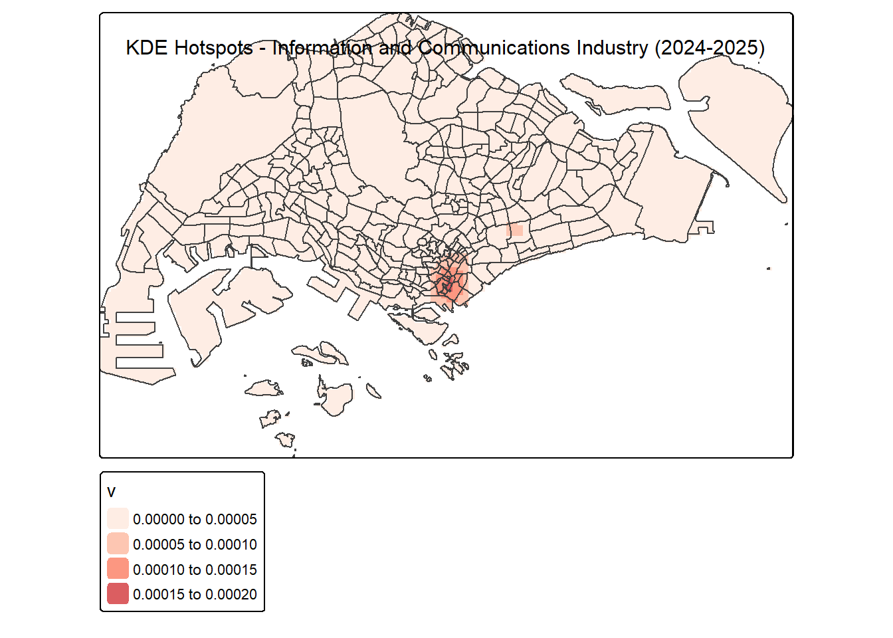
4.3 Education
biz_edu_ppp <- as.ppp(st_coordinates(biz_edu),
W = as.owin(st_union(sg_boundary)))
kde_edu <- density(biz_edu_ppp, sigma = 1000)
kde_edu_stars <- st_as_stars(kde_edu) * 1e6
st_crs(kde_edu_stars) <- 3414
tm_shape(kde_edu_stars) +
tm_raster(
alpha = 0.7,
palette = "Greens",
title = "Density (per km²)"
) +
tm_shape(sg_boundary) + tm_borders(lwd = 0.5) +
tm_layout(title = "KDE Hotspots - Education (2024-2025)")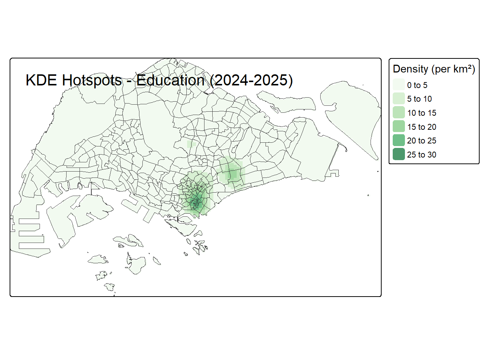
| Insight |
|---|
| F&B Businesses: Central areas exhibit significantly higher density clusters, indicating intense F&B activity. In contrast, peripheral regions like the north, parts of the south, and outlying islands have much lower density. This disparity reflects central areas’ stronger appeal for F&B businesses, likely due to better commercial environments, foot traffic, and amenities. |
| Information and Communications Industry: It shows a highly concentrated hotspot in the central area, with density reaching 150 - 200 per km². Most other regions have much lower density, below 50 per km², indicating a significant spatial concentration of this industry in the central area. |
| Education: It shows a notable concentration in the central area, with density reaching 25 - 30 per km². Most other regions have lower density, mainly below 10 per km², reflecting that educational institutions are largely clustered in the central part. |
5.1 G-function estimation
fnb_sample <- biz_fnb_ppp[sample(1:biz_fnb_ppp$n, 300)]
# ----------- G-function ------------
G_fnb <- Gest(fnb_sample, correction = "border")
plot(G_fnb)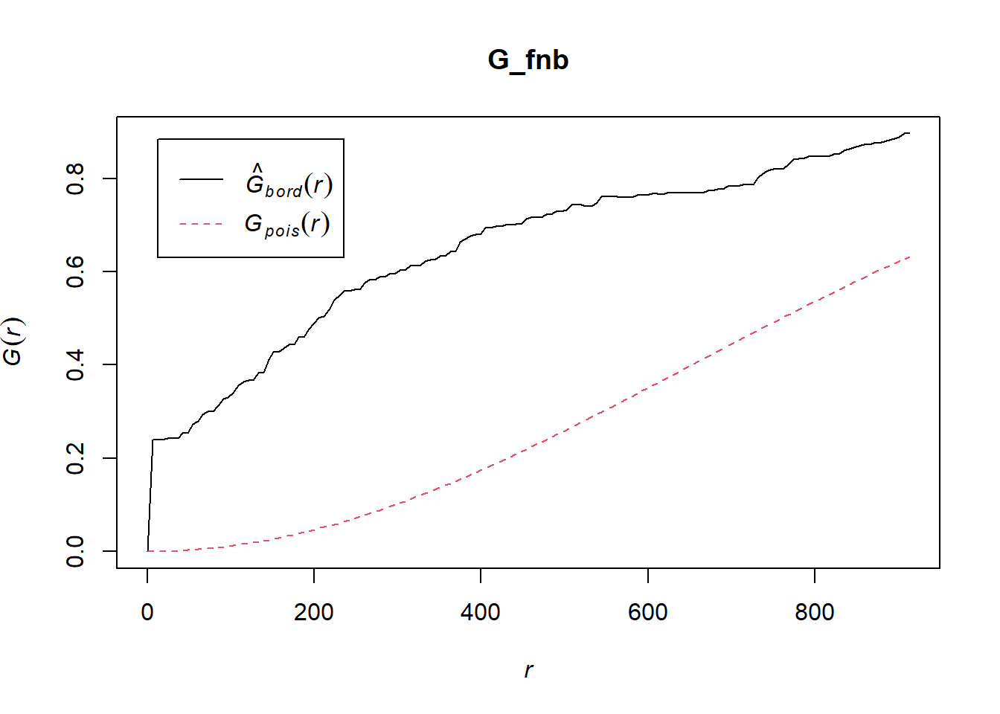
G_fnb_csr <- envelope(fnb_sample, Gest, nsim = 19)Generating 19 simulations of CSR ...
1, 2, 3, 4, 5, 6, 7, 8, 9, 10, 11, 12, 13, 14, 15, 16, 17, 18,
19.
Done.plot(G_fnb_csr)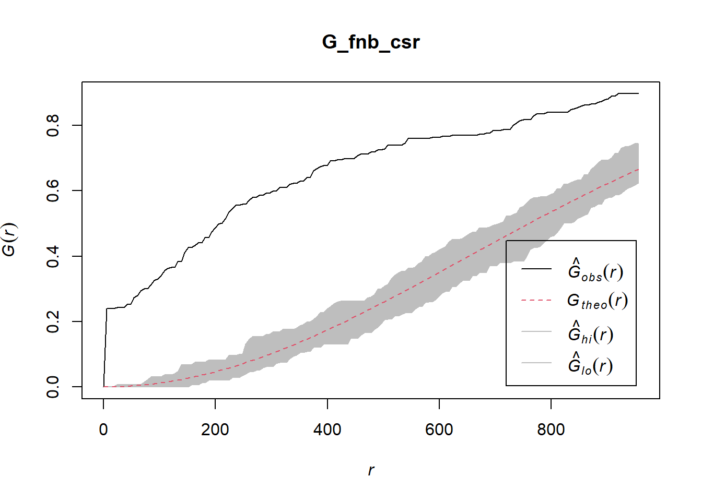
Both figures indicate that the point sets corresponding to F&B Business are not completely randomly distributed, but have obvious clustering characteristics.
5.2 F-function estimation
# ----------- F-function ------------
F_fnb <- Fest(fnb_sample, correction = "border")
plot(F_fnb)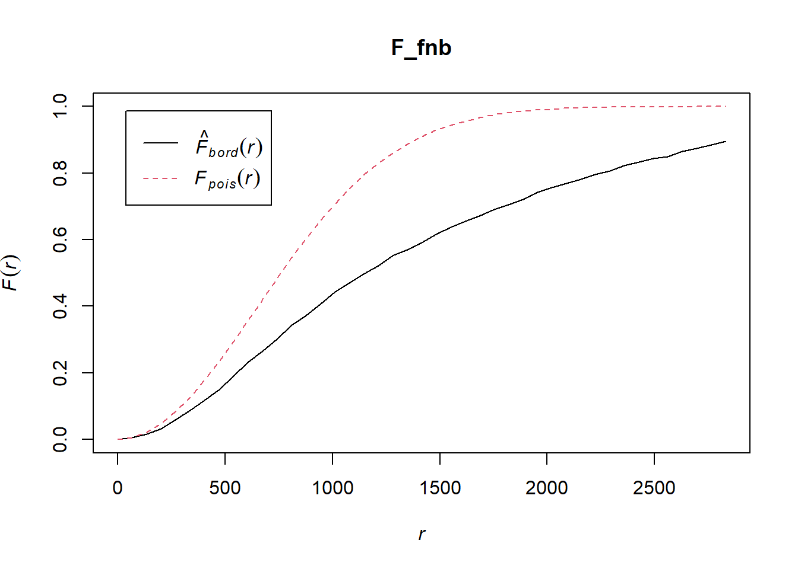
F_fnb_csr <- envelope(fnb_sample, Fest, nsim = 19)Generating 19 simulations of CSR ...
1, 2, 3, 4, 5, 6, 7, 8, 9, 10, 11, 12, 13, 14, 15, 16, 17, 18,
19.
Done.plot(F_fnb_csr)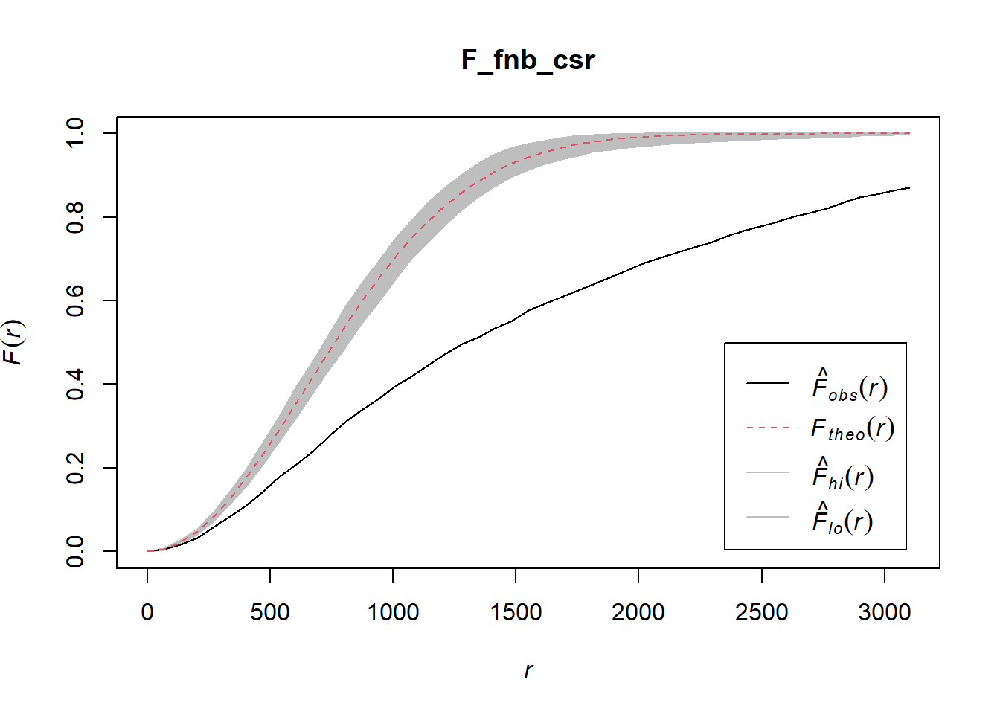
The two charts indicate that the point set is not completely randomly distributed, but presents a regular distribution.
5.3 K-fucntion estimate
# ----------- K-function ------------
K_fnb <- Kest(fnb_sample, correction = "Ripley")
plot(K_fnb, . - r ~ r)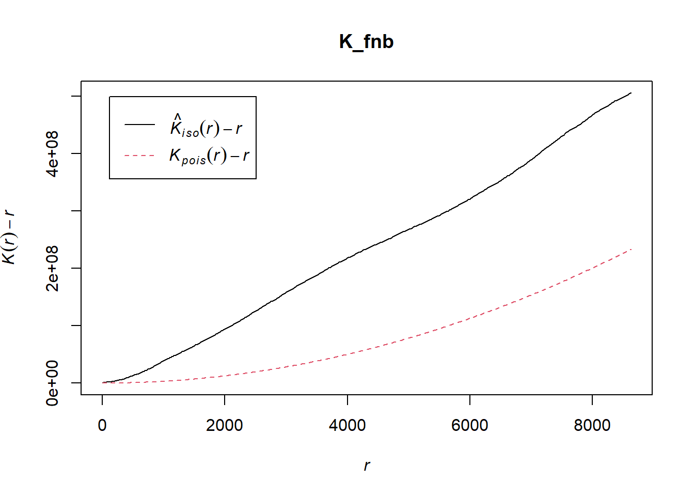
K_fnb_csr <- envelope(fnb_sample, Kest, nsim = 19)Generating 19 simulations of CSR ...
1, 2, [4:04 remaining] 3,
[3:32 remaining] 4, [3:19 remaining] 5, [3:05 remaining] 6,
[2:53 remaining] 7, [2:43 remaining] 8, [2:27 remaining] 9,
[2:16 remaining] 10, [2:00 remaining] 11, [1:49 remaining] 12,
[1:34 remaining] 13, [1:20 remaining] 14, [1:06 remaining] 15,
[54 sec remaining] 16, [40 sec remaining] 17, [27 sec remaining] 18,
[13 sec remaining]
19.
Done.plot(K_fnb_csr, . - r ~ r)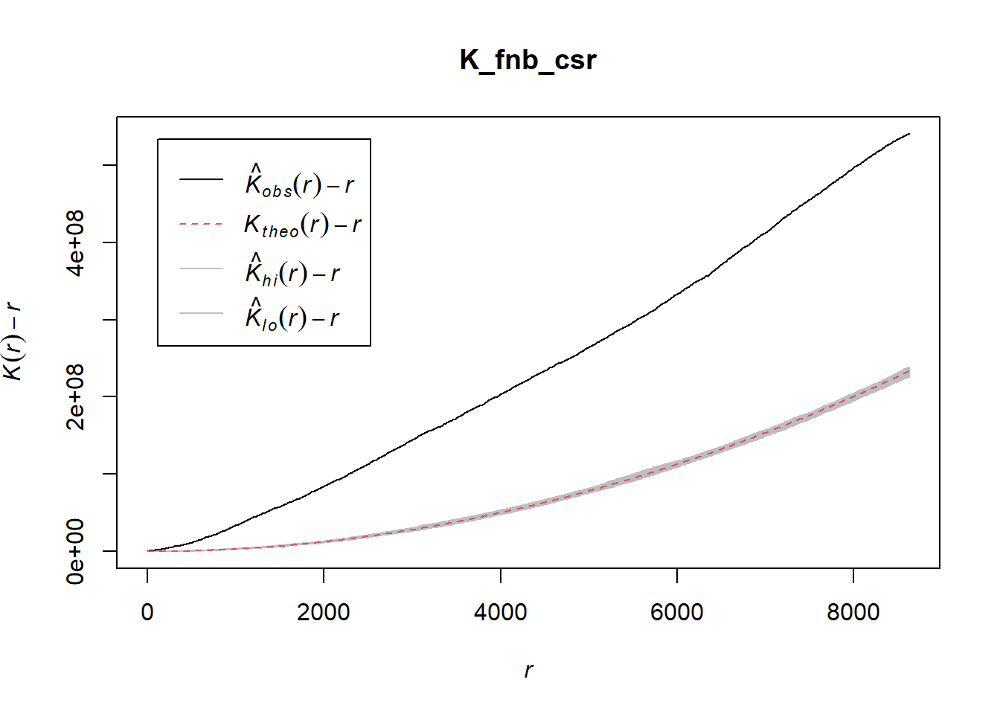
Clustering characteristics.
5.4 L-Fucntion estimation
# ----------- L-function ------------
L_fnb <- Lest(fnb_sample, correction = "Ripley")
plot(L_fnb, . - r ~ r)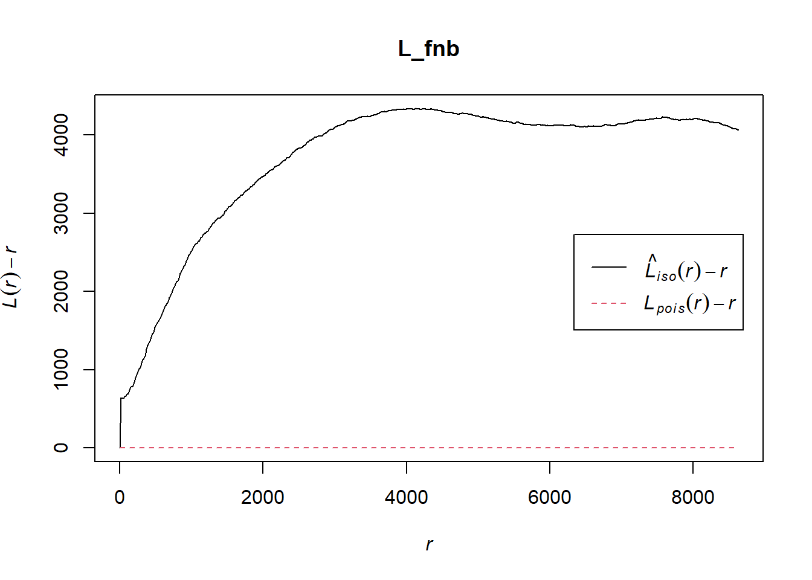
L_fnb_csr <- envelope(fnb_sample, Lest, nsim = 19)Generating 19 simulations of CSR ...
1, 2, [4:42 remaining] 3,
[3:53 remaining] 4, [3:28 remaining] 5, [3:15 remaining] 6,
[2:56 remaining] 7, [2:39 remaining] 8, [2:25 remaining] 9,
[2:12 remaining] 10, [1:59 remaining] 11, [1:47 remaining] 12,
[1:35 remaining] 13, [1:23 remaining] 14, [1:08 remaining] 15,
[55 sec remaining] 16, [41 sec remaining] 17, [27 sec remaining] 18,
[13 sec remaining]
19.
Done.plot(L_fnb_csr, . - r ~ r)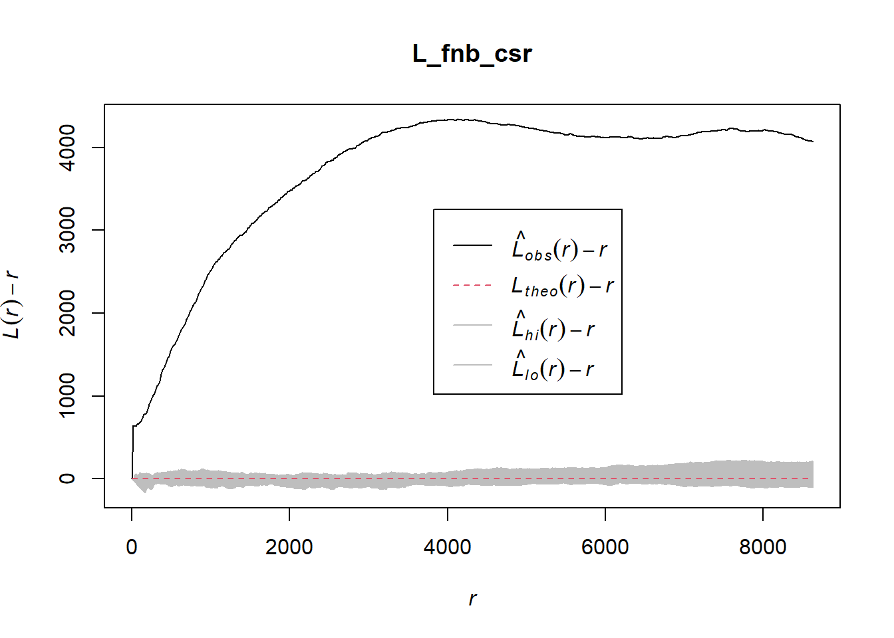
Clustering characteristics.
7. Spatio-temporal Analysis
biz_all <- bind_rows(
biz_fnb %>% mutate(industry = "F&B"),
biz_ict %>% mutate(industry = "ICT"),
biz_edu %>% mutate(industry = "Education")
)
biz_trend <- biz_all %>%
st_drop_geometry() %>%
group_by(YEAR, MONTH_ABBR, industry) %>%
summarise(count = n())
ggplot(biz_trend, aes(x = MONTH_ABBR, y = count, color = industry, group = industry)) +
geom_line(size = 1) + geom_point() +
facet_wrap(~YEAR, scales = "free_x") +
theme_minimal() +
labs(title = "Monthly Business Registrations by Industry",
x = "Month", y = "Number of New Businesses")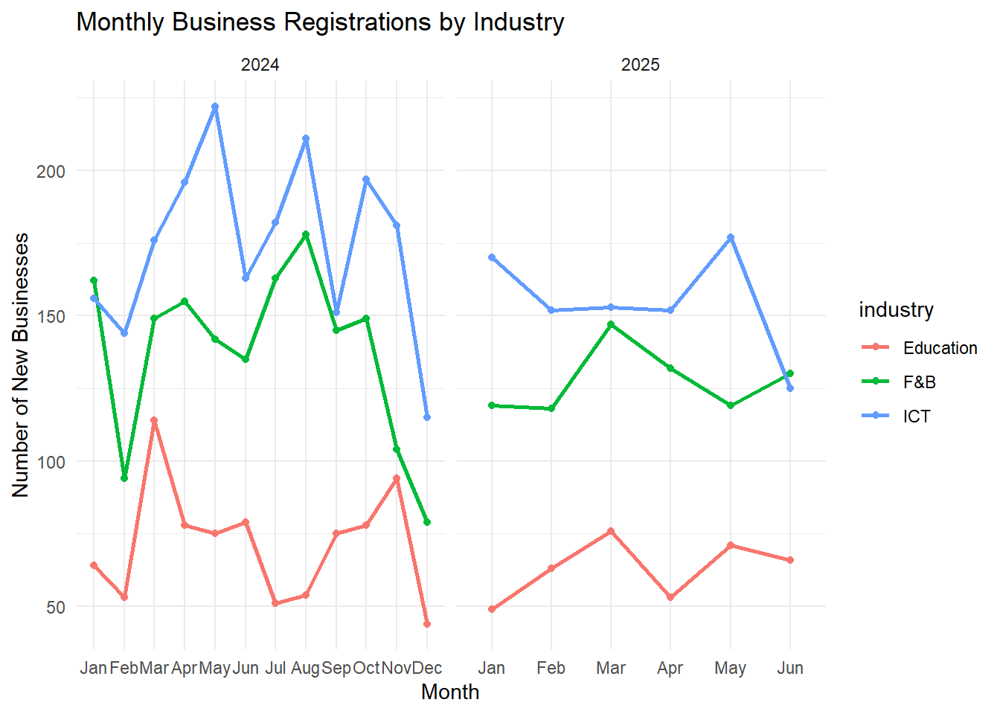
| Insight |
|---|
The monthly trends of new business registrations (2024–2025) show clear temporal variations across industries:
Overall, the temporal patterns reinforce the earlier spatial findings: central areas attract the majority of new businesses, and this concentration intensifies during months with higher registration volumes. This highlights a spatio-temporal clustering effect where both time and geography amplify business activity in Singapore’s core urban zones. |
8. Conclusion
The spatial and temporal analyses of business formation in Singapore reveal clear clustering tendencies across different industries. F&B businesses, ICT companies, and educational institutions are all significantly concentrated in central areas, particularly within the Central Business District (CBD) and nearby subzones. This reflects the role of the city centre as a hub of commercial, technological, and educational activity, supported by strong infrastructure, accessibility, and market demand.
From a planning perspective, these findings suggest the following implications:
Supporting commercial vitality in central areas The high clustering of F&B and ICT businesses in central Singapore indicates strong agglomeration effects. Urban planners can further strengthen supporting facilities such as transport, utilities, and mixed-use developments to sustain this concentration and enhance competitiveness.
Balancing spatial equity across regions Peripheral areas, especially in the northern and western regions, show much lower densities of new businesses. Targeted incentives (e.g., tax benefits, infrastructure upgrades, flexible zoning) could encourage decentralization of businesses and reduce over-dependence on the CBD.
Evidence-based land use policy The second-order spatial analysis (G, F, K, L functions) confirms that business formation is not random but clustered, providing a statistical foundation for planning interventions. Such insights can guide where to allocate land for commercial, ICT, or educational functions in future Master Plans.
In conclusion, spatial point pattern analysis of business formation offers valuable insights into urban economic dynamics. The integration of geospatial analytics with planning practice can help Singapore achieve a more balanced, resilient, and sustainable urban structure.